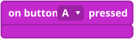
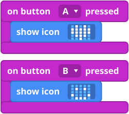
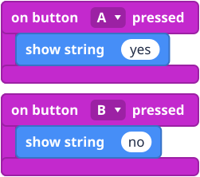
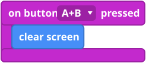

What it is
So far your program ran once, at the start. An event is something that happens, like a button press. An event block is a waiting block: the blocks inside it sleep until the event happens, then they run. Think of a doorbell: nothing happens until someone presses it, and then the bell rings. Every press rings the bell again, and the blocks inside run again.
The blocks
This block is in the Input group.

Mini examples



Try this
- Make A show a heart and B show a smiley. Press them in any order.
- Make A+B clear the screen.
- Make a button that shows your name.
Common mistakes
- Nothing happens when I press. The blocks are not inside the event block. Drag them in so they click into place.
- The lights keep the old picture. Lights stay as they are until something changes them. Add clear screen or show something new.
- The program started again. You pressed the reset button on the back. That is normal.
The code in words
JavaScript: input.onButtonPressed(Button.A, function () {
basic.showIcon(IconNames.Heart)
})
Python: def on_button_pressed_a():
basic.show_icon(IconNames.HEART)
input.on_button_pressed(Button.A, on_button_pressed_a)
V1 and V2
The buttons work the same on both. V2 only The gold logo on the front of a V2 can work as a touch button too. Use the on logo pressed block.
Teacher notes
- Time: about 20 minutes.
- Ideas covered: events (code that waits and then reacts), and the difference between code that runs once and code that waits.
- Common confusion: kids expect the button blocks to run from top to bottom like on start.
- The block pictures are simplified drawings. Check the real blocks in MakeCode.